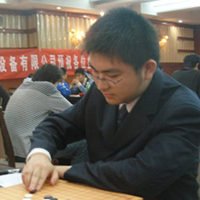
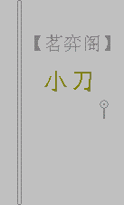
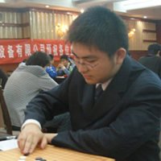
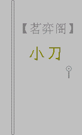
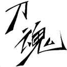
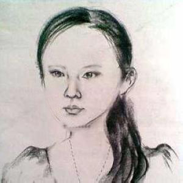

(浙江 贺加贝)
(浙江 贺加贝)
写博达人----屏蔽(北京 李 一)

网站达人----励精
 (北京 孙立京)
(北京 孙立京)
收徒达人----茗弈小刀(四川 朱丽安)

小丸.net《五子棋的那些达人们》插图摘编版 ☆此文系转载，原作者是：小丸.net
〔本站所有内容均免费，版权归原作者所有，如有不妥，请与本站联系。〕
--------------------------------------------------------------------------------
原文地址ShowPost.asp?ThreadID=9267
英语达人----舍露里(浙江 贺加贝)
写博达人----屏蔽(北京 李 一)
网站达人----励精(北京 孙立京)
收徒达人----茗弈小刀(四川 朱丽安)
刷分达人----刀魂 (未知 佚 名)
写作达人组合----土豆VS小天 (北京李鹏 and福建戴晓涵
and福建戴晓涵 )
)
舍身达人----聊城蓝剑 (山东棋手)
(山东棋手)
［ 五子痴 于 2009-12-28 16:41:02 时奖励此帖[金币加 20 威望加1］
还有几位资料不全，请大家接续吧
杀棋达人----坏蛋 (江苏 陶 俊)
问题达人----高星 (江苏 高 星)

引用：
原文由 黄药师 发表于 2009-12-28 18:28:47 :
小贝的素描头像让我感到恐惧~~~

这样呢？我觉得问题出在眉毛上
引用：有志还是位画家啊？别说，这样一改，轮廓没那么突兀了，“看上去很美”
原文由 有志青年 发表于 2009-12-28 19:43:06 :引用：
原文由 黄药师 发表于 2009-12-28 18:28:47 :
小贝的素描头像让我感到恐惧~~~这样呢？我觉得问题出在眉毛上
引用：最后那三个红字一定是班猪偷加上去的，请康岩童鞋不要错怪他人
原文由 星月族 发表于 2009-12-28 16:55:43 :
作者 小丸.net (江苏 康岩)
真难看！
［ 小丸.net 于 2009-12-29 11:53:54 时花20金币送鲜花一朵］


陶俊（坏蛋 常州溧阳）